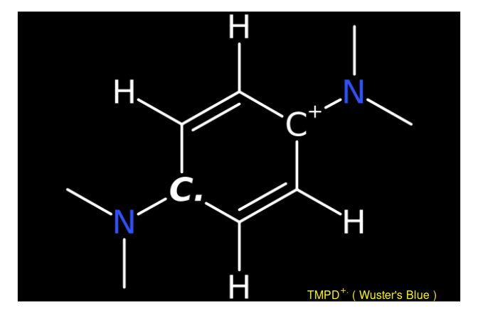
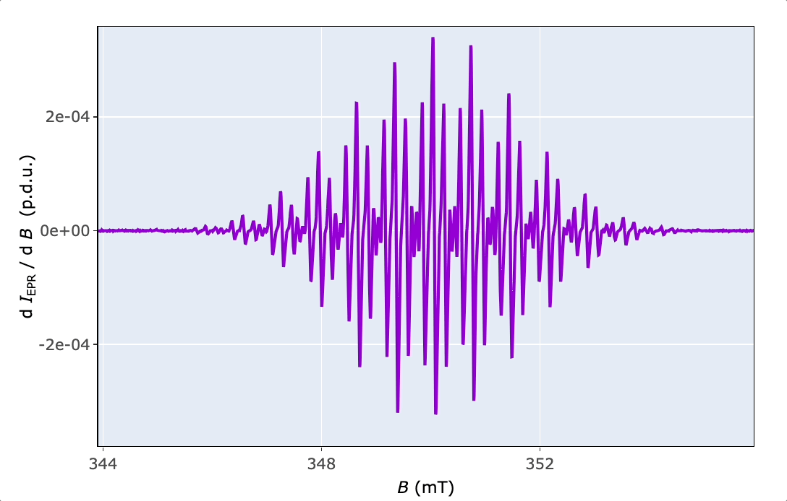
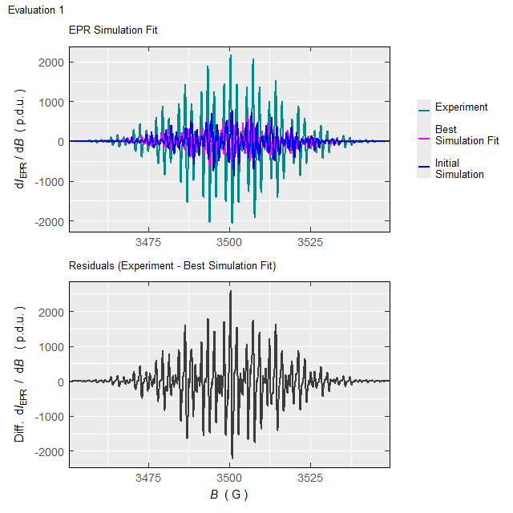

Basic Functionality
Processing and Analysis of the Wuster’s Blue EPR Spectrum
Source:vignettes/functionality.Rmd
functionality.Rmd\(\require{mhchem}\)
1 Introduction
The Wuster’s reagent got its name according to C. Wuster who discovered the oxidation products of p-phenylenediamine derivatives (1). It is a suitable compound to demonstrate the feasibility of Electron paramagnetic resonance (EPR) combined with the in situ electrochemistry/voltammetry because of the one-electron oxidation (2):
\[\begin{equation} \small \ce{TMPD <=>[-e^-] TMPD^{.+}} \tag{1.1} \end{equation}\]
where the \(\small \ce{TMPD}\) stands for N,N,N’,N’-tetramethyl-p-phenylenediamine (Wuster’s reagent) abbreviation. The second oxidation step into di-cationic structure (not depicted in Equation (1.1)) takes place far (\(\small \approx (0.5-0.6)\,\mathrm{V}\)) from the first one (3). Therefore, upon the first oxidation step, it changes its state from diamagnetic (not visible by EPR) to paramagnetic (with one unpaired electron) observable by a characteristic EPR spectrum, as shown below. Such change is not only visible by the “magic” where the nicely structured EPR spectrum rises from the noisy background upon oxidation, however, it is also associated with an exciting color change from almost colorless to violet-blue. Accordingly and unsurprisingly, the radical cation of N,N,N’,N’-tetramethyl-p-phenylenediamine is described as Wuster’s blue. Such example will demonstrate the main workflow to process and analyse EPR spectra by the eprscope 📦 . The \(\small \ce{TMPD^{.+}}\) was generated electrochemically by potentiostatic electrolysis at 0.308 V (vs Ag-quasiref. electrode) of the corresponding \(\small 1\,\mathrm{mM}\) \(\small \ce{TMPD}\) solution in \(\small 0.3\,\mathrm{M}\,\,\ce{TBAPF6}/\ce{DMSO}\).
2 Drawing of Molecular Structures
Structure of the investigated compound can be depicted by the draw_molecule_by_rcdk() based on function coming from {rcdk} 📦 (see also (4)) which is an  toolbox of the Chemistry Development Kit, an open source modular java library for chemoinformatics (5).
toolbox of the Chemistry Development Kit, an open source modular java library for chemoinformatics (5).
# radical cation Wuster's Reagent equivalent
# to N,N,N',N'-tetramethyl-p-phenylenediamine (TMPD) radical cation
# from 'SMILES' origin on "cob" ("color on black") canvas, without
# suppressing the hydrogen atoms
draw_molecule_by_rcdk(
molecule = "CN(C)[C+]1C([H])=C([H])[C.]([N](C)C)C([H])=C1[H]",
type = "smiles",
style = "cob",
mol.label = expression(TMPD^+. ~ "(" ~ Wuster * "'" * s ~ Blue ~ ")"),
mol.label.color = "yellow",
suppressh = FALSE
)
This function belongs to the package family/section Visualizations and Graphics and enables to create image of molecular structures either by SMILES and SMART codes or by loading a Structure Data File (.sdf) (6).
3 Reading Files and Writing Data Frames
The eprscope reads and converts pure (except the .mat format) text files. Therefore, to read the instrumental data files, recorded EPR spectra must be first converted into the ASCII format at the spectrometer. If the conversion option is not available, one can also try a free online converter by Leland B. Gee (7). To process the EPR spectral data, it is important not only to read the files with Intensity vs. B (usually in .asc, .txt, .csv format) but also associated files like those containing the instrumental parameters used to record the EPR spectra (usually in .DSC , .dsc or .par format). The information including in these files is required to e.g. normalize the Intensity (like \(\small \mathrm{d}I_{\mathrm{EPR}}~/~\mathrm{d}B\) in the derivative spectral form) or to evaluate the \(g\)-factor (position of the spectrum) as well as for simulations of the EPR spectra and to evaluate the kinetic parameters of the radical reactions.
Reading of the instrumental parameters from .DSC / .dsc or .par files (corresponding to acquisition software “xenon”/“magnetech” or “winepr”, respectively) is provided by several functions for different purposes e.g. for kinetic measurements or simulations. The general function readEPR_params_tabs() summarizes all important parameters in a list of data frames and can be converted into individual interactive tables by {DT} package ➨
# package built-in example file => "TMPD_specelchem_accu_b.par"
tmpd.params.file <-
load_data_example(file = "TMPD_specelchem_accu_b.par")
#
# reading the parameter file coming from "winepr" acquisition softw.
tmpd.params <- readEPR_params_tabs(
path_to_dsc_par = tmpd.params.file,
origin = "winepr"
)
#
# the output `tmpd.params` is a list consisting
# of the "info" data frame (contaning characters)
tmpd.params$info # or `tmpd.params[["info"]]`
#> Parameter
#> 1 Operator
#> 2 Date
#> 3 Recording Time
#> 4 Comment
#> 5 Experiment Title
#> 6 X Var. (e.g. B/RF) Unit
#> Information
#> 1 Tarabek
#> 2 08/01/2011
#> 3 15:15
#> 4 Q=3500, 1mM solut. tetramethyl phenylene diamine, accu 20 spectra
#> 5 field-sweep
#> 6 G
# and the second data frame is the "params",
# containing parameters, their values and units
tmpd.params$params # or `tmpd.params[["params"]]`
#> Parameter Value Unit
#> 1 Frequency 9.814155 GHz
#> 2 Central Field 3499.170000 G
#> 3 Sweep Width 120.000000 G
#> 4 Modulation Amplitude 0.500000 G
#> 5 Number of Scans 20.000000 Unitless
#> 6 Number of Points 2401.000000 Unitless
#> 7 Power 5.024000 mW
#> 8 Conversion Time 0.008000 s
#> 9 Sweep Time 19.208000 s
#> 10 Acquire Time 384.160000 s
#> 11 Time Constant 0.005120 s
#> 12 Temperature 295.068344 K
#> 13 Receiver Gain 39905.250000 UnitlessFinally, conversion of the second data frame (tmpd.params$params) can be performed by the readEPR_params_tabs() function with the argument interact = "params" .
The origin argument in reading functions reflects the differences in ASCII text file structure depending on the acquisition software. Moreover, while the intensity can be automatically normalized upon spectrum recording within “xenon”/“magnetech” software, the “winepr” intensity has to be normalized after the measurement if one wants to compare the intensities of two or several EPR spectra. The reading of the \(\small \ce{TMPD^{.+}}\) spectral data by readEPR_Exp_Specs() proceeds as follows with the output having the form of the universal data frame format ➨
# loading package built-in example file => "TMPD_specelchem_accu_b.asc"
tmpd.data.file <- load_data_example(file = "TMPD_specelchem_accu_b.asc")
# intensity is normalized by the Q value (sensitivity factor)
# and the number of scans (`Nscans`). From the previous
# parameter/info reading we know: Q = 3500 (in the `info`
# data frame), Nscans = 20 (from `tmpd.params$params`
# in the 5th row and the 2nd column)
tmpd.data.norm.01 <- readEPR_Exp_Specs(
path_to_ASC = tmpd.data.file,
col.names = c("B_G", "dIepr_over_dB"),
qValue = 3500,
norm.vec.add = tmpd.params$params[5,2],
origin = "winepr"
)
#
# preview of the first six rows
head(tmpd.data.norm.01)
#> B_G dIepr_over_dB B_mT
#> <num> <num> <num>
#> 1: 3439.1699 -2.8023680804 343.91699
#> 2: 3439.2200 -1.5253253348 343.92200
#> 3: 3439.2700 -1.9261109375 343.92700
#> 4: 3439.3201 0.0019604213 343.93201
#> 5: 3439.3701 -4.6310111607 343.93701
#> 6: 3439.4199 -3.5957537946 343.94199An arbitrary character string may be chosen for the column name (see col.names argument)1. However, a safe rule of thumb is to use notation like “quantity_unit” as already shown above in the case of magnetic flux density \(\small B\). The name for the intensity column reads dIepr_over_dB (without units) because it reflects the derivative mode \(\small \mathrm{d}I_{\mathrm{EPR}}/\mathrm{d}B\) in CW (continuous wave) EPR. Other intensity related column names can be used as well. The above described function readEPR_Exp_Specs() can automatically convert \(\small B\) values by the argument convertB.unit=TRUE (or FALSE) depending on the original units “G” or “mT”. The reason is, that both units are quite often used to display the EPR spectra as well as to calculate the additional related quantities like \(\small \Delta B\), \(g\) or hyperfine splitting constants \(a\). If the Intensity has to be normalized also by additional instrumental parameters, like conversion time and receiver gain (automatically performed within “Xenon” software), one should use the quantify_EPR_Norm_const() function from the Evaluations and Quantification family ➨
# calculation of the advanced normalization constant
# by selected parameters from the parameter list above,
# these parameters (WinEPR acq. spectrometer software)
# can be also obtained by the `readEPR_param_slct()`
# function with the codes described in the corresponding
# documentation
#
# following parameters are required (`req.params`) =>
# conversion time (RCT) in milliseconds, receiver gain (RRG)
# unitless, sweep with (HSW) in Gauss, number of points (RES)
# and number of scans/accumulations (JSD).
#
req.params <-
readEPR_param_slct(tmpd.params.file,
string = c("RCT", "RRG", "HSW", "RES", "JSD"),
origin = "winepr"
)
#
adv.norm.constant <- quantify_EPR_Norm_const(
conv.time.ms = req.params$RCT,
Nscans = req.params$JSD,
Npoints = req.params$RES,
rg = req.params$RRG,
rg.unit = "Unitless",
Bsw = req.params$HSW
)
#
# therefore, the reading of the experimental
# data file =>
tmpd.data.norm.02 <- readEPR_Exp_Specs(
path_to_ASC = tmpd.data.file,
col.names = c("B_G", "dIepr_over_dB"),
qValue = 3500,
norm.vec.add = adv.norm.constant,
origin = "winepr"
)
#
# data frame preview
head(tmpd.data.norm.02)
#> B_G dIepr_over_dB B_mT
#> <num> <num> <num>
#> 1: 3439.1699 -4.3890968e-07 343.91699
#> 2: 3439.2200 -2.3889797e-07 343.92200
#> 3: 3439.2700 -3.0166941e-07 343.92700
#> 4: 3439.3201 3.0704314e-10 343.93201
#> 5: 3439.3701 -7.2531358e-07 343.93701
#> 6: 3439.4199 -5.6317054e-07 343.94199Moreover, the norm.vec.add argument can involve additional normalization quantities like sample weight, concentration, number of scans (if not normalized by the spectrometer)…etc. If needed, all such quantities can be defined at once within the norm.vec.add .
Visualization and/or conversion of data frames (tables) into several formats like .html , .pdf , .docx or .pptx. can be provided by the most used “table” packages. Among them, libraries/packages like {DT}, {flextable}, {gt}, {tinytable} and {kableExtra} (see Section 5.3 below) are often used for publication ready table visualization. The last data frame previewed by the tinytable is shown in the following example.
# visualization of the first 10 rows by `{tinytable}`
tinytable::tt(head(tmpd.data.norm.02, n = 10))| B_G | dIepr_over_dB | B_mT |
|---|---|---|
| 3439.1699 | -4.3890968e-07 | 343.91699 |
| 3439.2200 | -2.3889797e-07 | 343.92200 |
| 3439.2700 | -3.0166941e-07 | 343.92700 |
| 3439.3201 | 3.0704314e-10 | 343.93201 |
| 3439.3701 | -7.2531358e-07 | 343.93701 |
| 3439.4199 | -5.6317054e-07 | 343.94199 |
| 3439.4700 | -7.1400107e-07 | 343.94700 |
| 3439.5200 | -9.6621681e-07 | 343.95200 |
| 3439.5701 | -1.3318550e-07 | 343.95701 |
| 3439.6201 | 8.6338939e-07 | 343.96201 |
In order to process data frames by other software tools, different from  (e.g. in excel-like sheet format), they might be exported into universal
(e.g. in excel-like sheet format), they might be exported into universal .csv table format like by the base::write.csv() function ➨
write.csv(tmpd.data.norm.02,
file = "TMPD_EPR_Norm_data02.csv",
row.names = FALSE
)4 Visualizations of Spectral Data
All the data related to EPR spectroscopy can be visualized by the {ggplot2} 📦 and its extensions as well as by the interactive {plotly} graphing library. While the first library/package (based on the “Grammar of Graphics”2 , see also (8)) is one of the most comprehensive system for data visualization, the second one represents a valuable alternative to processing/acquisition software at EPR spectrometers. Namely, it includes tools like zooming, panning, data/values hovering and much more. Combination of both approaches actually represents literally endless possibilities how to visualize the data in electron paramagnetic resonance spectroscopy.
4.1 Static Plots by {ggplot2} and {patchwork}
The plot_EPR_Specs() is the essential function for plotting individual EPR spectra as well as those within series (e.g. time series \(\equiv\) kinetic measurements). Now, by means of this function and by the {patchwork} 📦 , we can compare the EPR spectra with the basic and “advanced” normalization ➨
# plotting the spectrum with basic normalization,
# the B-axis can be presented either
# in "mT" (default) or "G" plot title is added
# by `ggtitle()` function from `{ggplot2}` package
tmpd.plot.norm.01 <-
plot_EPR_Specs(data.spectra = tmpd.data.norm.01) +
ggplot2::ggtitle("Basic Normalization")
#
# preview
tmpd.plot.norm.01Figure 4.1: EPR spectrum of \(\small \ce{TMPD^{.+}}\) in \(\small 0.3\,\mathrm{M}~\ce{TBAPF6}/\ce{DMSO}\) after potentiostatic oxidative electrolysis at \(\small 0.308\,\mathrm{V}\) vs Ag-quasiref. Intensity normalized by number of scans, ‘Nscans’, and by sensitivity Q-factor, ‘qValue’.
Comparison of both spectra with different normalization ➨
# spectrum with the "advanced" normalization
tmpd.plot.norm.02 <-
plot_EPR_Specs(data.spectra = tmpd.data.norm.02) +
ggplot2::ggtitle("Advanced Normalization")
#
# both spectra together side-by-side by `{patchwork}` package,
# see https://patchwork.data-imaginist.com/articles/guides/layout.html
tmpd.plot.norm.0102 <-
tmpd.plot.norm.01 +
tmpd.plot.norm.02 +
patchwork::plot_layout(
ncol = 2,
axis_titles = "collect"
)
#
# preview of EPR spectra with different intensities
tmpd.plot.norm.0102Figure 4.2: Comparison of \(\small \ce{TMPD^{.+}}\) EPR spectra with different intensity normalization.
If one wants to save the previous Figure 4.2, the function ggplot2::ggsave() can be applied ➨
# to save the plot `tmpd.plot.norm.0102` with the size
# of (7 x 5) inches and the resolution of dpi = 200
ggplot2::ggsave("TMPD_EPR_Norm_compar.png",
plot = tmpd.plot.norm.0102,
width = 7,
height = 5,
units = "in",
dpi = 200
)
# other image formats like `.pdf`, `.tex`,`.jpeg`, `.eps`,
# `.bmp`, `.svg` or `.tiff` can be used as well
4.2 Interactive Plots by {plotly}
In order to explore the EPR spectrum in details (to read values, zoom or save the spectrum), functions like plot_EPR_Specs2D_interact() or plot_eval_ExpSim_app() are applied (consult the corresponding examples in the function documentation). Additionally, it can be also used for a series of EPR spectra, in overlay mode, similarly to plot_EPR_Specs(). Additional interactive 3D-plotting of EPR spectra, especially those recorded as time series, like during kinetic or variable temperature experiments, are provided by the plot_EPR_Specs3D_interact() function.

5 Basic EPR Spectral Characteristics
There are four basic parameters to characterize the EPR spectrum ➨
Spectrum position expressed by the \(g_{\mathrm{iso}}\)-value
Linewidth, for derivative line form expressed by the \(\small \Delta B_{\mathrm{pp}}\), that is the difference between \(\small B_{\mathrm{max}}\) and \(\small B_{\mathrm{min}}\) corresponding to position of maximum and minimum intensity, respectively. For the integrated spectral form, the linewidth is expressed by the \(\small FWHM\) (“full width at half-maximum” or “full width at half-height”).
Hyperfine splitting, \(a\) (in \(\mathrm{m \small T}\) or \(\small \mathrm{G}\)) which is the distance between the individual lines corresponding to interaction of the unpaired electron with the group of surrounding equivalent nuclei.
Single or double integral depending on the original spectral line form ➨ either integrated or derivative. This is directly proportional to the number of paramagnetic species/radicals.
5.1 Finding the giso-Value
The parameter is defined by the following Equation (5.1):
\[\begin{equation} \small g_{\mathrm{iso}} = \frac{h\,\nu}{\mu_{\mathrm{B}}\,B_0} \tag{5.1} \end{equation}\]
where the \(h\) and \(\mu_{\mathrm{B}}\) are Plank’s and Bohr magneton constants, respectively. Therefore, it is determined only by the microwave frequency (\(\nu\)) and the magnetic flux density (\(\small B_0\)) of the spectrum mid-point where \(\small \mathrm{d}I_{\mathrm{EPR}}/\mathrm{d}B = 0\) (in the case of CW EPR spectra, see also function eval_gFactor_Spec()).
# reading the microwave frequency ("MF") from the `.par` file
tmpd.mw.freq <-
readEPR_param_slct(tmpd.params.file,
string = "MF",
origin = "winepr"
)
# B region (349.677, 350.457) mT, including
# the B mid-point, to calculate the g-value,
# is obtained from the interactive plot above
tmpd.g.iso.spec <-
eval_gFactor_Spec(tmpd.data.norm.02,
nu.GHz = tmpd.mw.freq,
B = "B_mT",
B.unit = "mT",
Blim = c(349.677, 350.457)
)
#
# value preview
tmpd.g.iso.spec
#> [1] 2.00304Function plot_eval_ExpSim_app() represents an alternative way how to figure out the g-value. Within a simple UI (user interface), based on R Shiny, one can interactively display the EPR spectrum as well as its corresponding instrumental parameters. If the “Microwave frequency (GHz)” is available (the function automatically reads the right frequency by loading the “parameter” file with .par or .dsc/ .DSC extensions), by activating the “Show g-Values”. Immediately after that, the EPR spectrum abscissa is automatically converted from B into g (see Figure 5.1).
Figure 5.1: Screenshot of the interactive Shiny app, showing how to display g-values for the \(\small \ce{TMPD^{.+}}\) EPR spectrum.
The above (from the EPR spectrum)-obtained \(g_{\mathrm{iso}}\)-value may be compared with that computed by the Density Functional Theory (DFT) quantum chemical calculations of \(\small \ce{TMPD^{.+}}\), namely by PBE0/EPR-II/CPCM-DMSO//B3LYP/6-31+G(d,p) (see also Gaussian DFT Methods and Basis Sets). The extraction of \(g_{\mathrm{iso}}\)-value from the Gaussian (or from the ORCA quantum chemical package) output file is provided by the “eval_gFactor_QCHcomp() function ➨
# package built-in example file =>
# "TMPDAradCatEPRa.inp.log.zip"
# which is a `.zip` of the Gaussian output file
gauss.tmpd.load <-
load_data_example(file = "TMPDAradCatEPRa.inp.log.zip")
gauss.tmpd.output <- unzip(gauss.tmpd.load)
#
# giso-value is automatically calculated as the mean
# of its principal components (g1,g2,g3)
# summarized in the output file
tmpd.g.iso.dft <-
eval_gFactor_QCHcomp(gauss.tmpd.output)
#
# preview
tmpd.g.iso.dft
#> [1] 2.00317
#
# comparison of both theoretical and experimental g-values
# within the tolerance of 1e-3, to illustrate the automatic
# comparison of two values in R language, the function
# `all.equal()`can be applied
all.equal(tmpd.g.iso.spec, tmpd.g.iso.dft, tolerance = 1e-3)
#> [1] TRUEThe TRUE value represents a perfect agreement between the theoretically (2.00317) and the experimentally (2.00304) determined \(g_{\mathrm{iso}}\)-values, thus supporting the structure of \(\small \ce{TMPD^{.+}}\). Its difference from the free electron \(g_{\mathrm{e}}\approx \small 2.00232\) is a consequence of spin-orbit coupling (SOC) of the unpaired electron within the radical cation. Namely, it tells how the individual atomic orbitals contribute to single occupied molecular orbital (SOMO), i.e. the orbital characterizing the unpaired electronic state. Therefore, for \(\small \ce{TMPD^{.+}}\) the SOC is not so pronounced because of the small difference from \(g_{\mathrm{e}}\). However, for heavy atoms (e.g. central atoms in metal complexes) the difference is often large and indicates larger SOC than for organic radicals like for the one mentioned above (9).
5.2 Linewidth, 𝚫Bpp Determination
The linewidth in \(\mathrm{m\small T}\) can be determined from several spectral lines/regions from the interactive plots above and by the eval_DeltaXpp_Spec() function ➨
# calculate Delta Bpp from several regions
# => list of three selected elements/regions
B.regions.mT <- list(
c(349.677, 349.977),
c(349.177, 349.492),
c(350.822, 351.072)
)
#
# all Delta Bpp as vector, created by the iteration
# through all elements (with the help of
# the `sapply()` function) of `B.regions.mT`
tmpd.delta.Bpp <- sapply(
B.regions.mT,
function(b) {
eval_DeltaXpp_Spec(tmpd.data.norm.02,
xlim = b
)
}
)
#
# mean value of all three linewidths in mT
tmpd.delta.Bpp.mean <-
round(mean(tmpd.delta.Bpp), digits = 2)
#
# value preview
tmpd.delta.Bpp.mean
#> [1] 0.055.3 Hyperfine (HF) Structure and Simulations
The HF structure represents one of the most important characteristic of EPR spectra because it reflects the distribution of unpaired electron density within the radical/paramagnetic molecule. At least some of the hyperfine splitting constants (\(a\), HFSCs, distance between the main lines within the pattern) may be estimated from the interactive EPR spectrum above. For the subsequent simulation of the EPR spectrum these are simply converted by the convert_a_mT_2A() into hyperfine coupling constants in \(\mathrm{\small{MH}z}\) (\(\small A\), HFCCs) using the following relation (Equation (5.2)) ➨
\[\begin{equation} \small A = \frac{a\,g\,\mu_{\mathrm{B}}}{h} \tag{5.2} \end{equation}\]
# two visible distances or HFSCs (a in mT)
# from the interactive EPR spectrum above
a1.guess.mT <- abs(350.042 - 349.342)
a2.guess.mT <- abs(349.147 - 349.342)
# both values into vector
a.guess.mT <- c(a1.guess.mT, a2.guess.mT)
#
# conversion into A (in MHz) incl. g.iso value
# (`tmpd.g.iso.spec`) from the calculation above
A.guess.MHz <-
sapply(
a.guess.mT,
function(x) {
convert_a_mT_2A(
a.mT = x,
g.val = tmpd.g.iso.spec
)
}
)
#
# `A.guess.MHz` preview
A.guess.MHz
#> [1] 19.62 5.47According to literature (1) and the \(\small \ce{TMPD^{.+}}\) structure (see also Figure 5.2 with the DFT-optimized geometry), one can recognize three interacting groups of equivalent nuclei : \(\small 2\,\times\,\ce{^{14}N}\), \(\small 4\,\times\,\ce{^1H}\) (aromatic protons) and \(\small 12\,\times\,\ce{^1H}\) (methyl protons). DFT calculations may provide all \(\small A\) (HFCCs) as shown below.
Figure 5.2: DFT optimized structure of TMPD radical cation with atom numbering inherited from the Gaussian 16 output file.
In order to compare the theoretical and experimental HFCCs, the function rearrange_aAiso_QCHorgau() extracts the \(\small A\) values from the Gaussian or ORCA output files and calculates the mean values corresponding to selected groups of equivalent nuclei which are defined by the nuclei.list.slct argument. Therefore, according to numbering shown in Figure 5.2 ➨
# The same package built-in example file
# (`TMPDAradCatEPRa.inp.log.zip`)
# as for the extraction of g-values is (see above).
symmetry.As.df <-
rearrange_aAiso_QCHorgau(gauss.tmpd.output,
N.nuclei = 28,
nuclei.list.slct =
list(
c(7, 8), # 2 x 14N
c(13, 14, 15, 16), # 4 x 1H (aromatic)
c(
17, 18, 19, 20,
21, 22, 23, 24,
25, 26, 27, 28
) # 12 x 1H (methyls)
)
)
#
# data frame presentation by `{kableExtra}` package
kableExtra::kbl(symmetry.As.df) %>%
kableExtra::kable_styling(
bootstrap_options =
c("striped",
"hover",
"condensed"
)
)| NuclearGroup | Aiso_MHz_QCH | aiso_mT_QCH |
|---|---|---|
| 12 x 1H (17,18,19,20,21,22,23,24,25,26,27,28) | 20.25 | 0.72 |
| 2 x 14N (7,8) | 17.52 | 0.63 |
| 4 x 1H (13,14,15,16) | 5.24 | 0.19 |
The previous analysis reveals that the highest HF-coupling/splitting constants are related to the interaction of unpaired electron with the nitrogen and methyl-proton nuclei. Therefore the highest spin density is located on the “periphery” of the \(\small \ce{TMPD^{.+}}\) molecule. This may be also supported by the simulation (theoretical calculation) of the EPR spectrum (which is computed by the eval_sim_EPR_iso() function), taking into account the following parameters ➨
position of the EPR spectrum (\(g_{\mathrm{iso}}\)-value) ➨
g.isospectral linewidth corresponding to Gaussian and/or Lorentzian lineshape ➨
lineGL.DeltaBcontent of the Gaussian lineshape in the overall linear combination of both Gaussian and Lorenztian theoretical spectral forms (so called pseudo-Voigt lineshape) ➨
lineG.contentadditional instrumental parameters like central field ➨
Bcf, sweep width ➨Bsw, microwave frequency ➨mwGHzand number of points (spectral resolution) ➨Npoints.
Required arguments of the eval_sim_EPR_iso() function are presented after the arrows. The estimated linewidth tmpd.delta.Bpp.mean (\(\small 0.5\,\mathrm{G}\), see above) as well as the HFCCs, either directly taken from the spectrum (A.guess.MHz) or from the quantum chemical calculations (symmetry.As.df) and/or from the literature (1), can be used to simulate the EPR spectrum of \(\small \ce{TMPD^{.+}}\) as follows ➨
# isotropic simulation of the TMPD radical cation where
# the instrumental parameters are taken from
# the corresponding `.par` file: `tmpd.params.file` :
system.time({ # time (in s) reserved for the simulation processing
sim.tmpd.iso <-
eval_sim_EPR_iso(
g.iso = tmpd.g.iso.spec,
instrum.params = NULL,
path_to_dsc_par = tmpd.params.file,
origin = "winepr",
B.unit = "mT",
nuclear.system =
list(
list("14N", 2, 18.6), # A(2 x 14N) = 18.6 MHz
list("1H", 4, 5.5), # A(4 x 1H) = 5.5 MHz
list("1H", 12, 19.6) # A(12 x 1H) = 19.6 MHz
),
# Gauss (G) & Lorentz (L) linewidth (mT):
lineGL.DeltaB = list(0.05, 0.05),
# pseudo-Voigt line shape with 0.5 G + 0.5 L:
lineG.content = 0.5
)
})
#> user system elapsed
#> 0.102 0.000 0.101
#
# output is either interactive spectrum plot
# or list of plot and the simulated
# spectrum data frame.
#
# data frame preview
head(sim.tmpd.iso$df)
#> Bsim_G Bsim_mT Bsim_T dIeprSim_over_dB
#> 1 3439.17 343.917 0.343917 9.6281321e-07
#> 2 3439.22 343.922 0.343922 9.6721842e-07
#> 3 3439.27 343.927 0.343927 9.7169711e-07
#> 4 3439.32 343.932 0.343932 9.7625349e-07
#> 5 3439.37 343.937 0.343937 9.8089217e-07
#> 6 3439.42 343.942 0.343942 9.8561824e-07Afterwards, the simulated EPR spectrum can be presented/compared with the experimental one by the present_EPR_Sim_Spec() function (Figure 5.3), which is essentially based on ggplot2 package and therefore can be combined with the additional {ggplot2} functions . Such simulation of the \(\small \ce{TMPD^{.+}}\) EPR spectrum can be also performed by an interactive manner using the above-mentioned plot_eval_ExpSim_app() . One can “play” with all the simulation parameters defined above and the simulated EPR spectrum is instantaneously updated and compared with the experimental one like depicted on Figure 5.4.
# intesinty of the simulated spectrum
# is automatically scalled onto
# the experimental one.
present_EPR_Sim_Spec(
data.spectr.expr = tmpd.data.norm.02,
data.spectr.sim = sim.tmpd.iso$df,
B.unit = "mT",
Blim = c(345,355)
) +
# `plot_theme_NoY_ticks` theme from `{eprscope}`
plot_theme_NoY_ticks(legend.text = element_text(size = 13))Figure 5.3: Comparison of simulated and experiental EPR spectrum of \(\small \ce{TMPD^{.+}}\).
Figure 5.4: Screenshot of the Shiny app, showing an interactive simulation of the \(\small \ce{TMPD^{.+}}\) EPR spectrum.
Even though the simulated \(\small \ce{TMPD^{.+}}\) EPR spectrum is quite close to the experimental one, there are still some apparent differences. Therefore, the fitting/optimization functions like eval_sim_EPR_isoFit() and/or eval_sim_EPR_isoFit_space() can be applied to get a more accurate simulated spectrum. Particularly, the latter can explore a broad range of initial simulation parameters in order to fit and analyze an isotropic EPR spectrum, like the \(\small \ce{TMPD^{.+}}\) one, described in the following example.
# runnig parallel processing
# to fit the EPR spectrum of the TMPD
# radical cation + zoom the spectrum output
# by `Blim` argument, refer to the documentation
# of `eval-sim_EPR_isoFit_space`
tmpd.epr.iso.fit <-
eval_sim_EPR_isoFit_space(
data.spectr.expr = tmpd.data.norm.01,
nu.GHz = tmpd.params$params[1,2],
nuclear.system.noA = list(
list("14N", 2), # 2 x 14N
list("1H", 4), # 4 x 1H
list("1H", 12) # 12 x 1H
),
optim.params.init = c(
2.0030, 0.4, 0.4, 0,
1.25e4, 20.0, 5.5, 19
),
optim.params.init.dvary =
c(0.0002,0.1,0.1,0,
2e3,2,1,2), # or NULL
# Nmax.evals = 256,
# default number of evaluations:
# N.points.space = 16,
# total number of iterations: 256 x 16 = 4096
lineG.content = 0.3,
lineG.content.dvary = 0.15,# or NULL
# optim.method = "neldermead",
processing = "parallel",# or "sequential"
Blim = c(3455,3545)
)
#Such processing (with the elapsed time of \(\approx 220\,\mathrm{s}\) on 10-years old 4-core-CPU/16GB-RAM workstation/running on two cores) will not only return the above-defined list (tmpd.epr.iso.fit , see also documentation of the eval_sim_EPR_isoFit_space()), however also an animation, showing the progress of simulated EPR spectrum fit at each Evaluation :

Animation corresponds to the following optimization of EPR simulation parameters:
tmpd.epr.iso.fit$plot.optim.space
#
# the best `lineG.content` parameter:
tmpd.epr.iso.fit$best.lineG.contentFigure 5.5: Progress of the EPR simulation parameter optimization for the \(\small \ce{TMPD^{.+}}\) experimental spectrum, corresponding to above-depicted animation.
Gaussian-line content, corresponding to RSS minimum: 0.27
5.4 Integration of the EPR Spectrum
Integration process in the analysis of EPR spectra is undoubtedly an important operation because it mirrors the amount of paramagnetic centers/radicals within the sample (see also quantify_EPR_Abs()). However, it is heavily dependent on the initial form of the EPR spectrum, i.e. whether it is present either in derivative (usually in CW EPR) or already integrated (usually in 1D pulsed EPR) form/shape. Hence, the spectrum has to be integrated either twice or only once, respectively. The core-function used for the integration is based on the cumulative trapezoidal approximation, available from the {pracma} 📦 pracma::cumtrapz() (10–13).
The relative error of the cumulative trapezoidal integration is minimal, usually falling into the range of \(\small \langle 1-5\rangle\,\%\) or even lower depending on the spectrum resolution (11, 13). If the initial EPR spectrum displays low signal-to-noise ratio, the integral required for the quantitative analysis looses its sigmoid-shape ( see below an example of such shape). Therefore, in such case, the best option is to simulate the EPR spectrum and to evaluate the integral from that spectrum (see e.g. the quantify_EPR_Sim_series() function). The big advantage of this method consists in graphical representation of the corresponding integrals, i.e. the integration process may be visually controlled in the same manner like within the EPR spectrometer acquisitions/processing software (see also the plot_EPR_Specs_integ() function below). The integration of the EPR spectral data is essentially provided by the eval_integ_EPR_Spec() and its application to the experimental \(\small \ce{TMPD^{.+}}\) spectrum is documented by the following scripts ➨
# basic integration without baseline correction
# during the first integration.
tmpd.data.norm.02.integ <-
eval_integ_EPR_Spec(
data.spectr = tmpd.data.norm.02,
B = "B_mT",
B.unit = "mT",
sigmoid.integ = TRUE
)
#
# integration returns the original data frame
# with the additional integrals
# `single_Integ` + `sigmoid_Integ`
#
# preview
head(tmpd.data.norm.02.integ)
#> B_G dIepr_over_dB B_mT single_Integ sigmoid_Integ
#> <num> <num> <num> <num> <num>
#> 1: 3439.1699 -4.3890968e-07 343.91699 2.0128171e-06 0.0000000e+00
#> 2: 3439.2200 -2.3889797e-07 343.92200 1.9958553e-06 1.0031502e-07
#> 3: 3439.2700 -3.0166941e-07 343.92700 1.9823278e-06 1.9986707e-07
#> 4: 3439.3201 3.0704314e-10 343.93201 1.9747866e-06 2.9888990e-07
#> 5: 3439.3701 -7.2531358e-07 343.93701 1.9566436e-06 3.9727197e-07
#> 6: 3439.4199 -5.6317054e-07 343.94199 1.9245572e-06 4.9392357e-07Both integrals, within the entire \(\small B\)-range, can be visualized by the plot_EPR_Specs_integ() function from Visualization and Graphics family:
# both integrals are presented separately
# with their corresponding intensities automatically
# scaled onto the `y`-axis (defined by "free_y")
plot_EPR_Specs_integ(
tmpd.data.norm.02.integ,
slct.integs = c(
"single_Integ",
"sigmoid_Integ"
),
B = "B_mT",
B.unit = "mT",
separate.integs = TRUE,
separate.integ.scales = "free_y"
)
Figure 5.6: Single (single_Integ) and double (sigmoid_Integ) integrated EPR spectrum of \(\small \ce{TMPD^{.+}}\).
Obviously, the baseline of the single and double integrated \(\small \ce{TMPD^{.+}}\) EPR spectrum is somewhat distorted and must be corrected. To fix the baseline distortion, the eval_integ_EPR_Spec() function contains corresponding arguments which control the baseline approximation, under the complex peak, by a polynomial fit and provide its subtraction from the single integrated spectrum to evaluate the double/sigmoid integral more accurately ➨
# correction of the TMPD^{.+} EPR spectrum single
# integral by the 3rd degree polynomial
tmpd.data.norm.02.integCorr <-
eval_integ_EPR_Spec(
data.spectr = tmpd.data.norm.02,
B = "B_mT",
B.unit = "mT",
correct.integ = TRUE,
# peak region to correct the baseline:
BpeaKlim = c(344.5, 355.5),
# polynomial degree to fit baseline
# under the peak region:
poly.degree = 3,
sigmoid.integ = TRUE
)
#
# preview of the integrals,
# data frame column of corrected integral
# is denoted as `single_Integ_correct`
plot_EPR_Specs_integ(
tmpd.data.norm.02.integCorr,
slct.integs = c(
"single_Integ_correct",
"sigmoid_Integ"
),
B = "B_mT",
B.unit = "mT",
separate.integs = TRUE,
separate.integ.scales = "free_y"
)Figure 5.7: Corrected single and double integrated EPR spectrum of \(\small \ce{TMPD^{.+}}\) (see also Figure 5.6).
Maximum value of the double/sigmoid integral 0.0024 can be used for the estimation of \(\small \ce{TMPD^{.+}}\) amount within the sample.